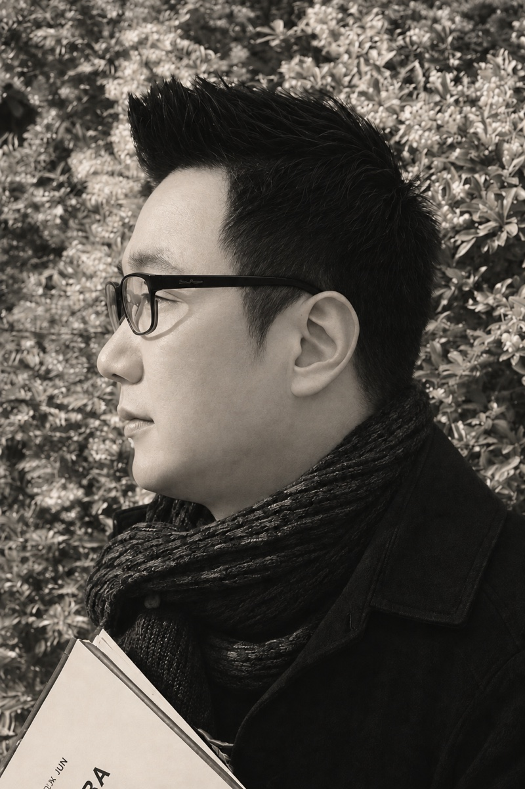

About Hyunsuk Jun
Hyunsuk Jun is a composer whose artistic interests lie in contemporary, electronic, and experimental music, with a particular focus on spatial composition and the exploration of sound. His works have been selected and presented at major festivals and forums including ISCM, SICMF, impuls Festival, TACTUS Young Composers’ Forum, L’Espace du Son Festival, and Matera Intermedia Festival.
He received a scholarship from the Austrian Federal Ministry for Education, Arts and Culture, was awarded the City of Graz Music Promotion Prize, and was commissioned to compose a work commemorating the 600th anniversary of the Styrian Parliament. His awards include First Prize and the Audience Prize at the Italy 150 International Composition Competition, First Prize at the Franco Evangelisti International Composition Competition, and Second Prize at the International Karol Szymanowski Competition for Composers.
He is currently a Visiting Professor at Ewha Womans University and also teaches at Chugye University for the Arts, Jeonbuk National University, and Korea National University of Arts.

Contact
For inquiries about works, performances, research, or teaching.
hyunsukjun2025@gmail.com ↗